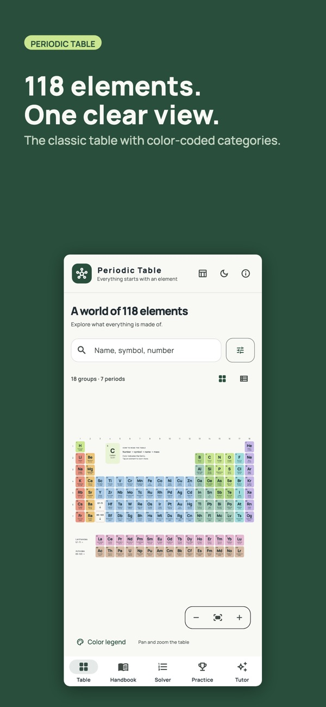
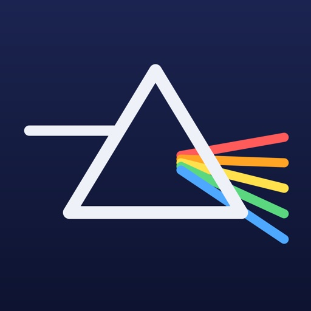
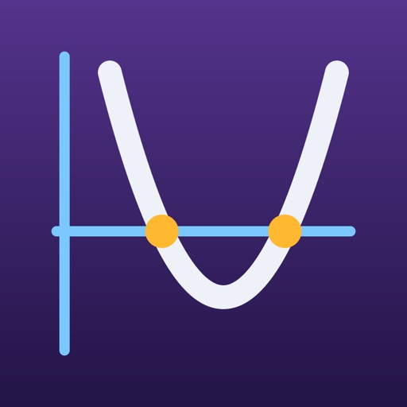

ஆர்வம்
இன்னும் கொஞ்சம்
கற்றுக்கொள்ளுங்கள்.
ஒரு கேள்வி கண்டுபிடிப்பாக மாறுகிறது. தனிமங்களையும் அவற்றின் தொடர்புகளையும் ஆராய்ந்து, உங்கள் ஆர்வத்தைத் தொடருங்கள்.
செயலியைப் பற்றி அறியுங்கள்: Periodic Table
சுயாதீன செயலி ஸ்டுடியோ
புதிதாக ஒன்றைக் கற்கலாம். உடலை இயக்க ஒரு காரணம் காணலாம். விளையாட நேரம் ஒதுக்கலாம். வாழ்க்கையை வளமாக்கும் சிறிய விஷயங்களுக்காகச் செயலிகளை உருவாக்குகிறோம்.
ஆர்வத்துடன் உருவானவை. உங்கள் அன்றாடத்திற்காக.
ஒரு சிறிய சுற்றுலா
ஆர்வம்
ஒரு கேள்வி கண்டுபிடிப்பாக மாறுகிறது. தனிமங்களையும் அவற்றின் தொடர்புகளையும் ஆராய்ந்து, உங்கள் ஆர்வத்தைத் தொடருங்கள்.
செயலியைப் பற்றி அறியுங்கள்: Periodic Table
இயக்கம்
தொலைபேசியை எடுக்கும் விருப்பத்தை உடலை இயக்கும் காரணமாக மாற்றுங்கள். சில பயிற்சிகள் நாளின் தாளத்தை மாற்றலாம்.
செயலியைப் பற்றி அறியுங்கள்: Unlocky
நல்ல தருணங்கள்
ஓய்வு நேரமாக இருந்தாலும் நண்பர்களுடன் ஒரு மாலையாக இருந்தாலும், விளையாட்டைத் தேர்ந்தெடுத்து கவலைகளை ஒதுக்கி இந்த நொடியை அனுபவியுங்கள்.
செயலியைப் பற்றி அறியுங்கள்: I'm Bored
தொகுப்பு 12
உங்கள் ஆர்வத்தைத் தொடருங்கள். ஒவ்வொரு செயலியிலும் ஆராய ஒரு சிறிய உலகம் உள்ளது.
உங்கள் நாளை எடுத்துக்கொள்ளும் செயலிகளைப் பூட்டுங்கள். சிறிது நேரம் புஷ்-அப், ஸ்குவாட் அல்லது ஜம்பிங் ஜாக் செய்து சில நிமிடப் பயன்பாட்டு நேரத்தைப் பெறுங்கள்.
செயலியைப் பற்றி அறியுங்கள்உங்கள் அடுத்த ஓட்டத்தை ஒரு சிறு நிலக் கைப்பற்றலாக மாற்றுங்கள். சுற்றுப்பாதையை மூடி, அதற்குள் இருக்கும் நிலத்தைக் கைப்பற்றி, உங்கள் தளத்தை அமைக்கவும் — நிஜ உலகில் ஒவ்வொரு பாதையாக.
செயலியைப் பற்றி அறியுங்கள்உங்கள் நகரத்தில் செடி வளர்ப்பவர்களுடன் செடிகள், தண்டுத் துண்டுகள் மற்றும் விதைகளைப் பரிமாறுங்கள். வாங்குவதைக் குறைத்து, பகிர்வதை அதிகரித்து, புதிதாக ஒன்றை வளருங்கள்.
செயலியைப் பற்றி அறியுங்கள்அமைதியான நேரத்திற்கும் நண்பர்கள் நிறைந்த அறைக்கும் 60-க்கும் மேற்பட்ட விளையாட்டுகள். குழு விளையாட்டுகள், பலகை விளையாட்டுகள், பிடித்த ஆர்கேட் விளையாட்டுகள், யோசனைப் பகடை — அனைத்தும் ஒன்றாக, இணையமின்றி.
செயலியைப் பற்றி அறியுங்கள்ஒரு பிக்சல் மரம், சிறிது வானம், மண்ணுக்கடியில் ஓர் உலகம். காற்று, வானிலை மற்றும் மாறும் பருவங்களுக்கிடையில் கிளை கிளையாகவும் வேர் வேராகவும் வளருங்கள்.
செயலியைப் பற்றி அறியுங்கள்உங்கள் புகைப்படங்கள், PDF மற்றும் குறிப்புகளிலிருந்து பாடங்கள், நினைவட்டைகள், பயிற்சி வினாடி வினாக்களை உருவாக்குங்கள். வரைவுகளைச் சரிபார்த்து, உங்கள் வேகத்தில் கற்றுக்கொள்ளுங்கள்.
செயலியைப் பற்றி அறியுங்கள்118 தனிமங்களையும் அறிந்துகொள்ளுங்கள். அவற்றின் பண்புகளை ஆராய்ந்து, வினைகளைப் புரிந்து, சூத்திரத்திலிருந்து விடை வரை கணக்கீடுகளைப் பின்தொடருங்கள்.
செயலியைப் பற்றி அறியுங்கள்
இயற்பியல்முதல் விதியிலிருந்து இறுதி விடை வரை. சூத்திரங்கள், தெளிவான விளக்கங்கள் மற்றும் கணக்கிடும் கருவிகள்—அனைத்தும் உங்கள் பாக்கெட்டில்.
செயலியைப் பற்றி அறியுங்கள்உயிரணுவிலிருந்து சூழலமைப்பு வரை. தெளிவான விளக்கங்கள், மரபியல் பயிற்சிகள் மற்றும் கற்றல் அட்டைகள் அறிவை ஒருங்கிணைக்க உதவுகின்றன.
செயலியைப் பற்றி அறியுங்கள்உங்கள் பாக்கெட்டில் ஒரு வடிவியல் பயிற்சிக்கூடம். கட்டமைப்புகளை வரையுங்கள், வடிவங்களை ஆராயுங்கள், தேற்றம் ஏன் உண்மை என்பதைப் புரிந்துகொள்ளுங்கள்.
செயலியைப் பற்றி அறியுங்கள்
இயற்கணிதம்தீர்வின் படிகளைப் பின்தொடருங்கள், வரைபடத்தை நகர்த்துங்கள், நிரூபணத்தைப் புரிந்துகொள்ளுங்கள். பள்ளி இயற்கணிதத்தையும் நுண்கணிதத்தின் அடிப்படைகளையும் எளிதாகக் கற்றுக்கொள்ளுங்கள்.
செயலியைப் பற்றி அறியுங்கள்நிலவரைத் தொகுப்பை ஆராயுங்கள், கொடிகளையும் தலைநகரங்களையும் கற்றுக்கொள்ளுங்கள். அறியாத இடத்தை நன்கு தெரிந்த இடமாக மாற்றுங்கள்.
செயலியைப் பற்றி அறியுங்கள்ஸ்டுடியோ பற்றி
ULTIMATE DIGITAL ஒரு சுயாதீன செயலி ஸ்டுடியோ. பயனுள்ளதாகவும் பயன்படுத்த இனிமையாகவும் ஒன்றை உருவாக்குவது என்ற எளிய சிந்தனையில் தொடங்குகிறோம்.
கடினமான சமன்பாடு முதல் அடுத்த ஓட்டப்பாதை வரை, அன்றாட ஆர்வத்தைச் சிறிய டிஜிட்டல் துணைகளாக மாற்றுகிறோம்.
தொடர்பு கொள்ள
செயலி பற்றிய கேள்வி அல்லது புதிய யோசனை உள்ளதா? உங்கள் செய்தியை மகிழ்ச்சியுடன் வரவேற்கிறோம்.
ultim8digital@gmail.com GitHub இல் எங்களைக் காணுங்கள்